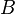

ESL entry example - Without software
From ESL
Authors:
Name (homepage), Institution
Name (homepage), Institution
Responsible for the ESL entry:
A. N. Other (wiki user page)
License: If applicable
Entries can be of different kinds depending on the content categories they contain. This one is a dummy example of an entry that only contains an API. The different main categories that can be contained in one entry are described in About ESL. Each entry may contain several categories, but not more than one instance of each category. For an API entry, there should be links to the functionality/theory/method or algorithm it is defined for.
The box on the right is the one needed for a page not containing a software implementation. A different box with some extra fields is needed for software pages (see this example). Here, Authors refers to the authors of the API, while the Responsible for the ESL entry is the person maintaining the wiki page updated (it may be the person who introduced the entry, or the responsibility may have been transferred by agreement).
The entry is first introduced with a few lines describing its contents, i.e., an introductory abstract. It should be brief but sufficient to transmit to the reader what he/she needs to know in order to decide whether it is interesting for his/her project.
A table of contents for the page can be introduced automatically. See the page source for more information on how to do so.
The following box contains the links upwards (functionalities and algorithms for which this API is defined) and downwards (known software that implements this API). The concepts of up and down extend trivially to an entry with describing a content of a different category. E.g. if the enrty describes an algorithm, it would link up to a functionality (method or theory), and down to particular APIs and/or software.
Links up: This is an API designed for this functionality and this algorithm
Links down: The following software implementations are known for this API: Software page
Programming interface
If present, APIs should be included in the list of categories at the end of the page. Alternatively, a link to another entry with the API description can be put here.
There is also the category Generic interfaces, which would correspond to a section with the same name, but describing the interface in less detail/abstract terms.
subroutine theRoutine( a, B, result, n, w)
Implementation independent:
-
a(input) INTEGER
Variable . -
B(input) DOUBLE PRECISION array, dimension (a,a)
Matrix . -
result(output) DOUBLE PRECISION array, dimension (a,a)
The result.
Algorithm specific:
-
n(output) DOUBLE PRECISION
Variable .
.
Implementation specific:
-
w(input, optional) LOGICALT: Do this.F: Don't do it.
Publications
(Optional) The main paper documenting this API can be found in this reference[1].
Future developments
(Optional) You can announce here things to come related to the entry, keeping in mind that you want to deliver.
Other sections
(Optional) Other sections can be added if relevant to the entry.
References
(Optional)
- ↑ A. N. Other, On the implementation of a great algorithm, J. Rand. Thoughts 3, 14 (1592). DOI: 65.3589/7.932.3846.26.433